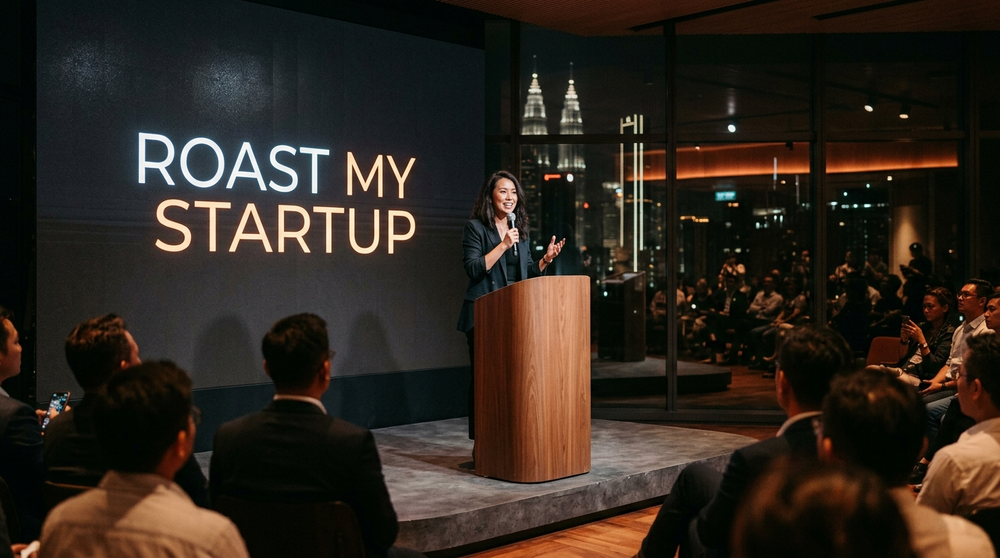
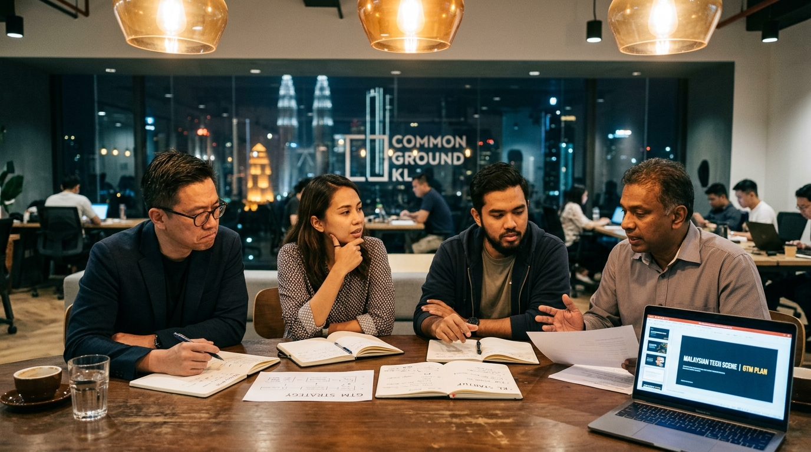

5 minutes to pitch. 10 minutes to get challenged by rotating VCs, operators, and seasoned founders. Then a documented Reality Check Report, a 30-day Action Plan, and a follow-up at day 90 to prove the feedback right or wrong.
| DATE | Thu 26 Jun 2026 |
| TIME | 6:30 PM Doors · 7:00 PM Start |
| VENUE | Common Ground KL Eco City |
| APPLY BY | Fri 12 Jun 2026 (2 weeks before) |

Is pricing viable? Is the gross margin sustainable at scale? Are you selling a vitamin or an irreplaceable painkiller?
Is the product too complex? Are customers actually using it daily or churning after 60 days?
Is your ICP too broad? Are you trying to serve both mamaks and multinational corporations? Is market timing right?
Are sales cycles too long (9-12 months)? Is CAC sustainable? Who is the economic buyer with check-signing authority?
Is the funding ask supported by actual traction and unit economics, or just optimistic revenue projections?
What should the founders stop doing, start doing, or accelerate immediately to achieve escape velocity?
Root cause diagnosis (e.g. ICP is too broad, sales cycle is 12 months).
Specific strategic shift (e.g. narrow ICP strictly to Klang Valley cold-chain operators).
90-day actionable execution plan (e.g. run a 60-day pilot with 15 target merchants).
Named ecosystem intro (e.g. introduce 2 logistics operators and 1 B2B mentor).
Backed Grab, Bukalapak, Carsome. Focuses on unit economics and founder velocity.
Scaled dark store logistics to RM 20M GMV. Challenges operational bottlenecks and supplier terms.
Pan-Asian early-stage veteran. Direct reality checks on market depth and regional expansion.
Deep domain expertise in healthcare compliance, clinical integrations, and enterprise procurement.
The real signature of Founders Drive is what happens after the stage lights go off. Each startup receives a documented Reality Check Report, an action plan tracked in Convex DB, and a day 90 review showing what was implemented, what changed, and what results were achieved.
